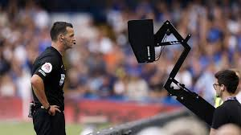

Rules of Football

Football is a game where the main goal is to score more goals than the other team. You score by kicking the ball into the opponent’s net (Goal), and the team with the most goals at the end wins. A full football match has two halves, each consisting of 45 minutes, with a 15-minute break in between called half-time. Sometimes, extra time is added at the end of each half if there were delays or injuries during the game.
Each team has 11 players on the field, including one goalkeeper. The match must stop if a team has fewer than 7 players.
Offside Rule

One of the trickier rules in football is the offside rule. A player is in an offside position if any part of the head, body, or feet is in the opponents’ half and nearer to the goal line than both the ball and the second-last opponent. It is only an offence if they become involved in active play. There is no offside offence if the player receives the ball directly from a goal kick, corner, or throw-in. This rule is there to stop players from standing near the goal just waiting for easy passes.
VAR (Video Assistant Referee)
VAR was officially introduced in 2018 at the FIFA World Cup to help referees make better decisions. It reviews key moments like goals, penalties, red cards, and offside decisions using video footage. The referee can either get advice from the VAR team or watch the incident again on a screen. VAR helps reduce human errors in important match-changing situations. It makes the game fairer, though it sometimes causes delays.
Fouls and Cards

Fouls happen when a player plays unfairly, such as pushing, kicking, tripping, or using hands (except the goalkeeper). After a foul, the referee may give a free kick or, if the foul is inside the penalty area, a penalty kick.
A yellow card is a warning given for serious fouls or bad behavior. If a player gets two yellow cards, it becomes a red card, and they are sent off. A red card is also given directly for very dangerous or violent conduct, and the player’s team must continue with one less player.
Other Rules

A goal kick happens when the ball goes out past the goal line after the attacking team touched it last. The goalkeeper then kicks the ball back into play.
The referee controls the game, makes sure the rules are followed, and can stop the match or give cards when needed. Assistant referees, also called linesmen, help with offside calls, throw-ins, corners, and fouls.
All these rules help make football fair, safe, and fun for everyone.